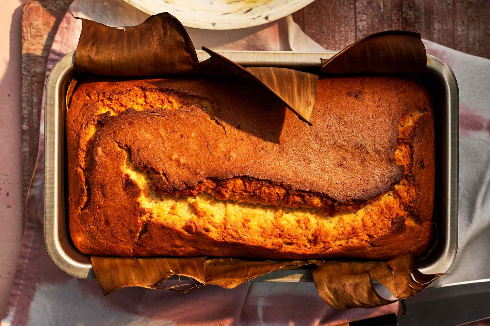
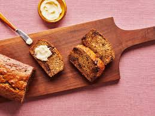
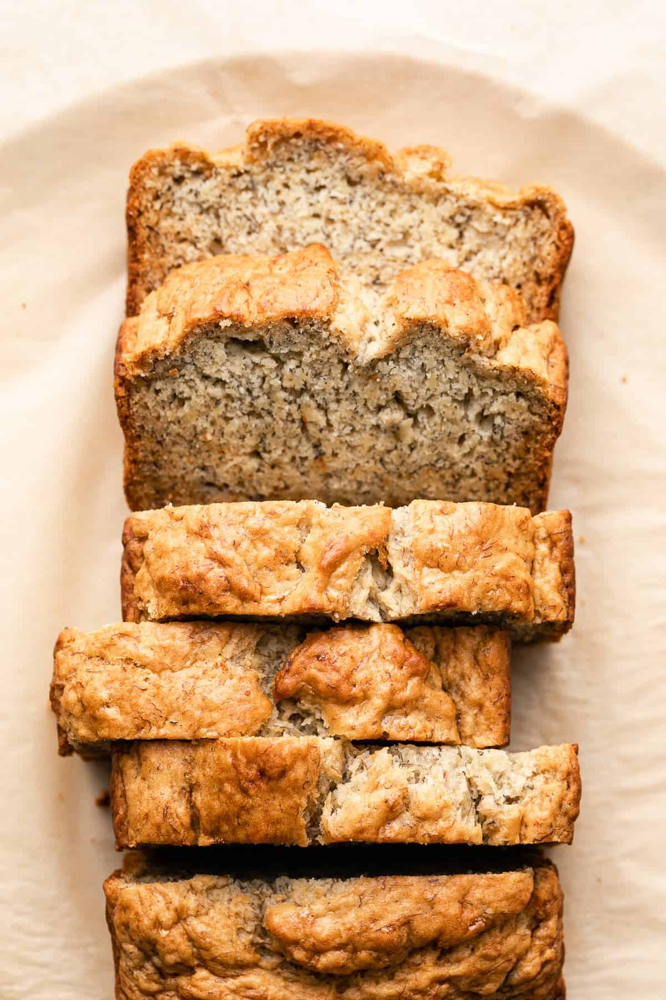
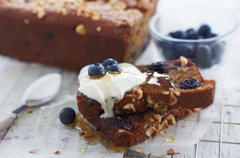

Double Chocolate Cookies
Origin: Michigan Source: Family Recipe Category: Dessert
My daughter learned to make these cookies at a baking camp at Zingermanns and has tweaked the recipe to fit the taste buds of her siblings. They are extremely sugary so the salt helps to balance it. Note, these cookies are best eaten very quickly.
Recipe Ingredients
- Unsalted butter
- Granulated Sugar
- Packed light or dark brown sugar
- Large egg
- Pure vanilla extract
- Semi-sweet chocolate chunks (melted)
- All-purpose flour
- Natural unsweetened cocoa powder
- Baking soda
- Salt
- Semi-sweet chocolate chunks
Recipe Steps
- In a mixing bowl cream together the butter, granulated sugar, and brown sugar
- Add the egg and vanilla extract and beat well
- Add the melted chocolate
- In a separate bowl combine the flour, baking soda, cocoa powder and salt
- Combine the wet and dry ingredients
- Add the unmelted chocolate chunks.
- Form 15 cookies and place on a baking sheet.
- Cook for 12 to 13 minutes at 350 degrees.
Additional Food images


Chicken Curry
Origin: Japan Source: Family Recipe Category: Main Dish
Unlike Indian or Thai curry, Japanese curry is more savory than spicy. It is an exemplary comfort food and one of the most-loved home-cooked dishes in Japan.
Recipe Ingredients
- skinless, boneless chicken breast
- 1 tablespoon olive oil
- 1 pinch salt and ground black pepper
- water
- 1 package curry sauce mix
- 1 can peas
- 5 new potatoes, halved
- 1 package sliced cremini mushrooms
- 2 medium carrots, chopped/li>
- 1 medium onion, chopped
- 2 cups jasmine rice
Recipe Steps
- Place chicken in a large, deep skillet. Drizzle with olive oil and season with salt and pepper on both sides. Add 1/3 cup water to the pan, cover, and cook over medium heat until no longer pink in the center and the juices run clear, about 20 minutes.
- While chicken is cooking, pour 2 cups water into a microwave-safe bowl. Break curry sauce mix into pieces and add to water. Heat in the microwave on high for 3 1/2 minutes; remove and stir until sauce mix has completely dissolved.
- Remove chicken from the skillet. Cut into cubes, return to the skillet, and pour curry sauce over top. Stir in peas, potatoes, mushrooms, carrots, and onion. Bring to a boil, then lower heat and simmer until vegetables are tender, about 30 minutes.
- Meanwhile, bring remaining water and rice to a boil in a saucepan. Reduce heat to medium-low, cover, and simmer until rice is tender and water has been absorbed, 20 to 25 minutes.
- Scoop rice into bowls and serve curry on top.
Additional Food images


Chinese Jiaozi
Origin: China Source: Family Recipe Category: Main Dish
Chinese dumplings (Jiaozi, 饺子) are stuffed parcels made of unleavened dough and savory fillings consisting of minced ingredients like meat, egg, tofu, or vegetables. They can be boiled, pan-fried or steamed.
Recipe Ingredients
- Flour
- Water
- Pork
- Cabbage
Recipe Steps
- Make dough.
- Add filling.
- Fold jiaozi.
- Put jiaozi into water and let it boil for 5 mins.
- Eat jiaozi with dipping sauces.
Additional Food images


Banana Bread
Origin: United States Source: Family Recipe Category: Dessert Banana bread is a type of sweet bread made from mashed bananas. It is often a moist and sweet quick bread but some recipes are yeast raised.
Recipe Ingredients
- 2 to 3 medium (7" to 7-7/8" long) very ripe bananas, peeled (about 1 1/4 to 1 1/2 cups mashed)
- 1/3 cup (76g) butter, unsalted or salted, melted
- 1/2 teaspoon baking soda (not baking powder)
- 1 pinch salt
- 3/4 cup (150g) sugar (1/2 cup if you would like it less sweet, 1 cup if more sweet)
- 1 large egg, beaten
- 1 teaspoon vanilla extract
- 1 1/2 cups (205g) all-purpose flour
Recipe Steps
- Preheat the oven to 350°F (175°C)
- Mash the bananas and add the butter.
- Mix in the remaining ingredients.
- Bake for 55 to 65 minutes at 350°F (175°C), or until a toothpick or wooden skewer inserted into the center comes out clean. A few dry crumbs are okay; streaks of wet batter are not. If the outside of the loaf is browned but the center is still wet, loosely tent the loaf with foil and continue baking until the loaf is fully baked.
- Remove from oven and let cool in the pan for a few minutes. Then remove the banana bread from the pan and let cool completely before serving. Slice and serve. (A bread knife helps to make slices that aren't crumbly.).
Additional Food images
  Falafel
Origin: Arab Source: Family Recipe Category: Main Dish
Falafel is a deep-fried ball or patty-shaped fritter of Arab origin, featuring in Middle Eastern cuisine made from broad beans, ground chickpeas, or both.
Recipe Ingredients
- 1 c. dried chickpeas
- 1/2 small white onion, coarsely chopped
- 4 cloves garlic, coarsely chopped
- 1/4 c. fresh cilantro, coarsely chopped
- 1/4 c. fresh parsley, coarsely chopped
- 1 1/2 tsp. kosher salt
- 1 tsp. baking powder
- 1 tsp. ground coriander
- 1 tsp. ground cumin
- 1/4 c. all-purpose flour
- Vegetable oil, for frying (6 to 8 c.)
- Tahini sauce, for serving
Recipe Steps
- Pour chickpeas into a large bowl and add cold water to cover by at least 2". Cover and refrigerate overnight.
- Drain chickpeas well, pat dry, and transfer to a food processor. Pulse until chickpeas are halfway broken down. Add onion, garlic, cilantro, parsley, salt, baking powder, coriander, and cumin and continue to pulse until finely chopped but not pasty. Sprinkle flour over and pulse just until combined.
- Using a 1-ounce cookie scoop or 2 spoons, portion chickpea mixture into 1" balls (about 2 tablespoons each). Using clean hands, roll each ball, tossing between both hands and lightly squeezing to compress, until smooth and compact (mixture will feel wet). Arrange balls on a clean plate or parchment-lined baking sheet.
- Into a large heavy pot fitted with a deep-fry or candy thermometer, pour oil to a depth of 2". Heat over high heat until thermometer registers 350°. Set a wire rack in a large baking sheet. Working 6 to 7 at a time, gently lower falafel into oil and fry, adjusting heat as needed, until deeply browned on all sides, 2 to 3 minutes.
- Remove from oil with a slotted spoon and transfer to prepared rack to cool. Serve warm with tahini sauce alongside.